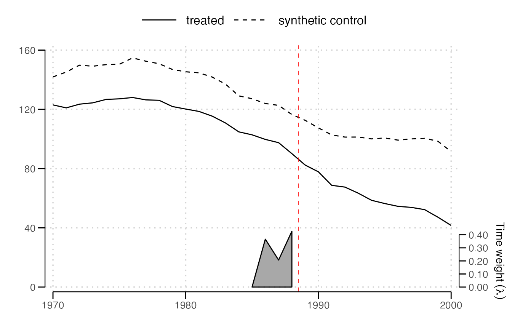
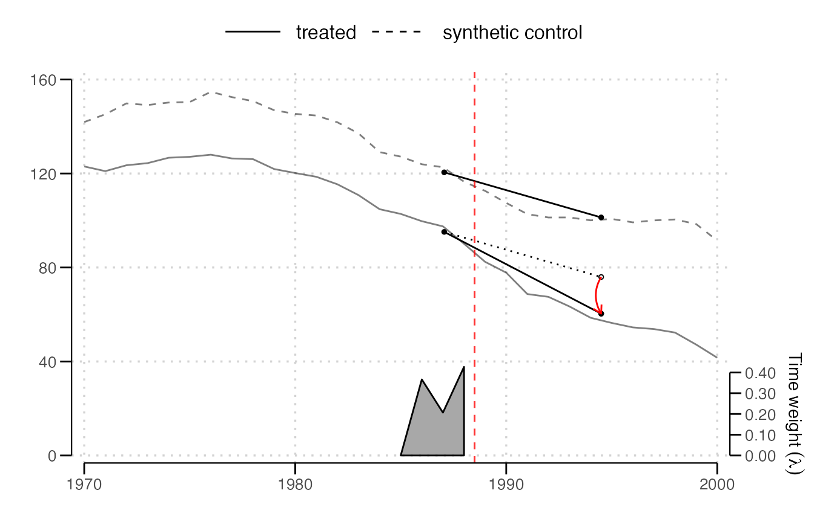
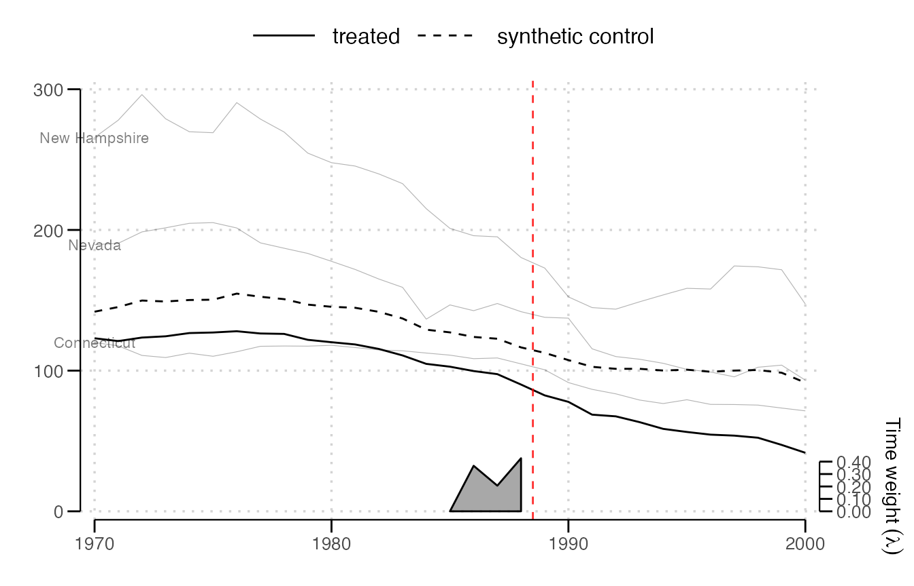
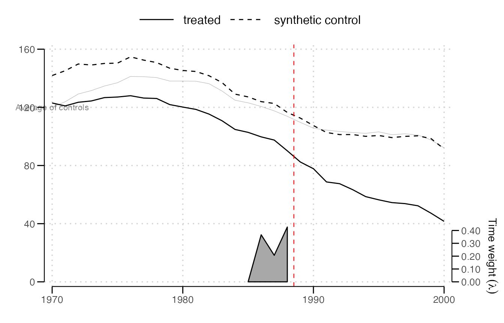
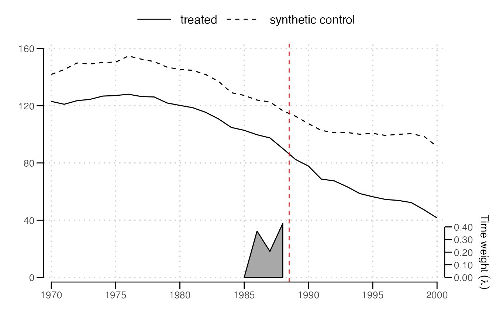
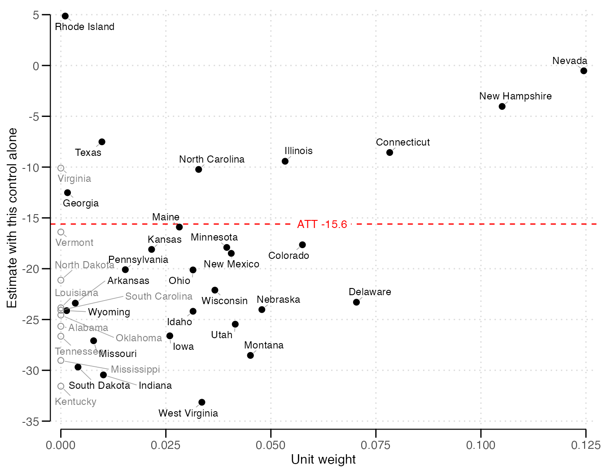
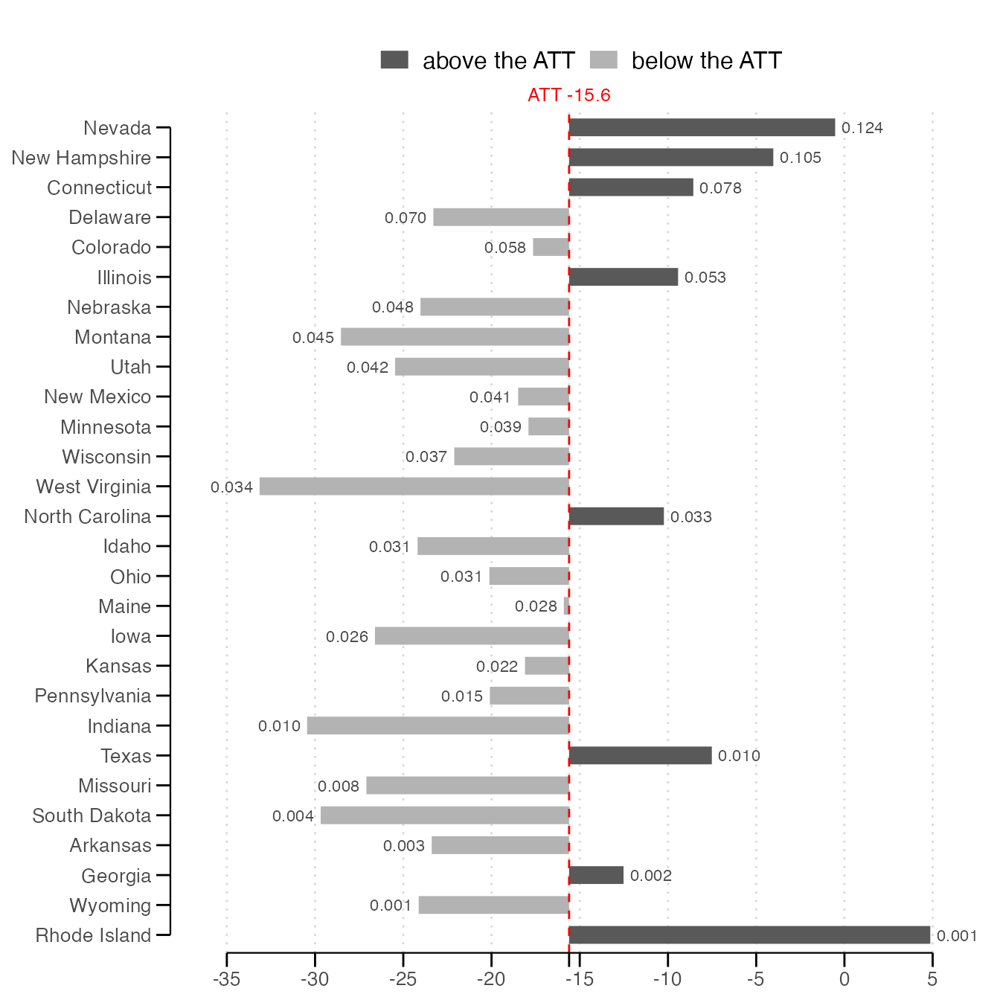
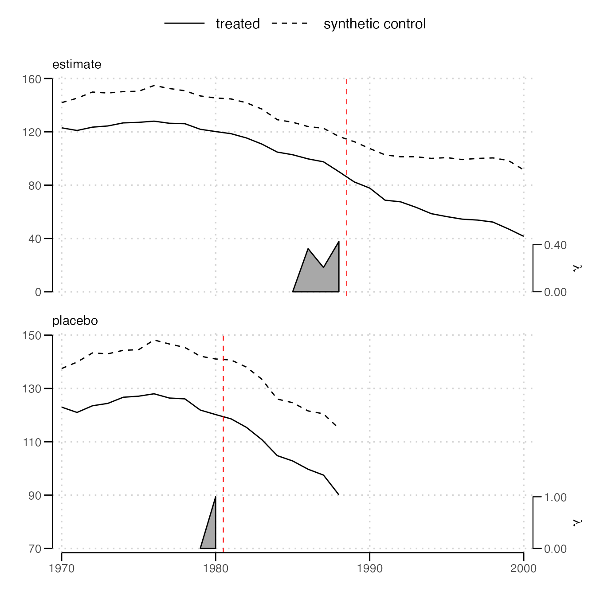

The plot functions take the result of sdid() and return
ggplot objects, which draw when printed and can be extended with
+. They require ggplot2, and sdid_units_plot()
uses ggrepel, when it is installed, to keep its labels apart.
library(sdid)
data(california_prop99)
fit = sdid(california_prop99, "PacksPerCapita", "State", "Year", "treated",
vce = "placebo", seed = 1213, graph = FALSE, quietly = TRUE)Trends
sdid_plot(), which plot() calls, draws the
treated units’ average and the synthetic control. The red dashed line
marks the start of treatment, midway between the last period before it
and the first treated period. The gray band at the bottom shows the time
weights, with their scale on the right-hand axis.
sdid_plot(fit)
The two lines may sit apart before treatment. Synthetic difference-in-differences asks the synthetic control to move in parallel with the treated units over the weighted pre-treatment periods, not to match their level.
style = "effects" adds a diagram of the comparison
behind the estimate, with an arrow marking the effect.
sdid_plot(fit, style = "effects")
Individual units
spaghetti.units adds the trajectories of chosen units,
here the three controls with the largest weights.
w = weights(fit)$omega
top = w$unit[order(-w$`1989`)][1:3]
sdid_plot(fit, spaghetti.units = top, spaghetti.label.size = 3)
spaghetti.matrices adds any other trajectories, given as
a list with one matrix per estimate, each row a trajectory with a column
per period and a row name that labels it. Here, the unweighted average
of all controls, the comparison plain difference-in-differences
makes.
Y = fit$setup$Y
average = rbind("Average of controls" = colMeans(Y[w$unit, , drop = FALSE]))
sdid_plot(fit, spaghetti.matrices = list(average), spaghetti.label.size = 3)
Comparing estimators
A named list of results draws each in its own panel, stacked and labeled by its name.
estimates = lapply(c(SDID = "sdid", SC = "sc", DID = "did"), function(m) {
sdid(california_prop99, "PacksPerCapita", "State", "Year", "treated",
method = m, vce = "noinference", graph = FALSE, quietly = TRUE)
})
sdid_plot(estimates)
Synthetic control puts no weight on the periods before treatment, so
its panel has no band, and difference-in-differences weighs them
equally. Each band is drawn on its own scale.
lambda.comparable = TRUE draws them on a common scale
instead, where a weight of 1 fills the band, so that their heights can
be compared across panels.
Ticks
Each axis has about five nice ticks covering the data, as the Stata
command chooses them, and a time axis of years gets ticks only at whole
years. x.breaks and y.breaks set the ticks,
which the axis range, frame and band follow. Adding a scale to the
returned plot instead replaces the one it sets.

Unit weights
sdid_units_plot() shows each control’s own estimate, the
difference-in-differences of the treated units with that control alone,
whose average with the unit weights is the estimate. The default scatter
plots each control’s weight against its own estimate, with controls
given no weight drawn as open circles.
sdid_units_plot(fit)
The heavily weighted controls are at the right. Their spread about
the red line shows whether they agree, and the open circles show whether
the weighting changed the answer. type = "bars" draws the
weighted controls from the largest weight down, each bar running from
the estimate to the control’s own estimate, with its weight at the
end.
sdid_units_plot(fit, type = "bars")
label.units names every control, those with weight, or
the n with the largest weights. For a staggered result,
each cohort gets a panel, with ten names each, unless
cohort chooses one.
Placebo tests
sdid_placebo_plot() draws the estimate above an in-time
placebo, which pretends treatment began earlier, at
placebo.time, using only the periods before the real
treatment. Where nothing happened, the placebo’s lines should keep
tracking each other after its red line.
sdid_placebo_plot(fit, placebo.time = 1981)
sdid_placebo() returns the placebo estimate itself.
sdid_placebo(fit, placebo.time = 1981)
#> Synthetic difference-in-differences estimate -1.66742. Effective controls 15.9 of 38 and effective periods before treatment 1.0 of 11, with 1 treated unit and 8 periods after treatment.